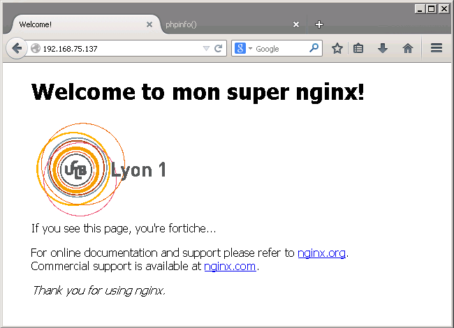

TP 1 : technologies côté serveur
Objectifs pédagogiques du TP
- Comprendre le fonctionnement du protocole HTTP
- Comprendre le fonctionnement d'un serveur Web
- Se familiariser avec la configuration d'nginx
- Savoir créer et configurer un site Web
Outils
- Serveur HTTP : nginx
- Navigateurs Mozilla Firefox (installé par défaut sur Ubuntu), autres navigateurs (Google Chromium) que vous installerez par vous-mêmes
- Ressources : docs en ligne d'nginx et en particulier aide au démarrage et doc du serveur Web.
- Tutoriels : voir partie "Liens utiles" de la page d'accueil du cours
- Connexion aux VMs les machines sont accessibles en SSH (sous Windows, utiliser MobaXterm ou Putty)
- Autres outils éditeurs de texte, autres commandes Linux installées sur les machines
Évaluation
Vous répondrez au questionnaire Tomuss correspondant à votre groupe et reprenant les questions numérotées et en gras de cet énoncé : https://tomuss.univ-lyon1.fr/2018/Automne/TP1-M1IF03-grpB ou -grpC ou -grpD. La note de ce TP sera calculée en fonction de vos réponses à ce questionnaire.
Attention : pour les réponses avec plusieurs lignes (par exemple du code), merci de rajouter le caratère '§' (paragraphe) à la fin de chaque ligne.
Préambule
Attention : vous devez être soit sur eduroam, soit en VPN (soit sur les machines de TP) pour faire la partie PHP.
Pour ce TP, vous utiliserez la ferme de machines virtuelles de l'université. Nous avons préparé une configuration spéciale comprenant une Ubuntu 16.04 serveur (sans window manager) avec un serveur nginx (1.10.1) préinstallé. Ces machines ne sont accessibles que depuis l'intérieur de l'université.
Votre encadrant vous aura assigné une VM par binôme. Cette VM tournera déjà et vous y aurez accès par son adresse IP. Vous vous connecterez dessus en SSH avec l'utilisateur "etudiant/etudiant". Cet utilisateur est dans le groupe de sudoers.
L'adresse IP de votre VM est "192.168.75." plus le numéro de binôme qui vous a été attribué par votre enseignant.
Dans Tomuss, indiquez les 3 derniers chiffres (dernier octet) de cette adresse IP dans la case prévue à cet effet.
L'exécutable nginx est /usr/sbin/nginx et les fichiers de configuration sont dans le répertoire /etc/nginx/. La config de base est dans le fichier nginx.conf.
1. Prise en main d'nginx
Vérifiez que le serveur HTTP nginx de votre VM est lancé et qu'il fonctionne.
Les commandes pour démarrer/arrêter nginx sont détaillées à http://nginx.org/en/docs/beginners_guide.html#control.
À l'aide de commandes Unix de base, de la documentation d'nginx et du Web, répondez aux questions suivantes :
- Quel est l'utilisateur qui a lancé le serveur ? Pourquoi ?
- Quel est l'utilisateur qui fait tourner les "workers" ? Pourquoi ?
- Indiquez la fonction des principaux éléments (sous-répertoires, fichiers par thématique) du répertoire de configuration d'nginx.
- Que signifie la deuxième ligne (non vides) du fichier nginx.conf et comment vérifier qu'elle est bien prise en compte ?
- Où est spécifié le port sur lequel répond le serveur (fichier et directive) ?
- Quel est le répertoire où se trouvent les données du site (fichier et directive) ? Pour vérifier, modifiez la page d'accueil de ce site, et constatez le résultat dans le navigateur.
2. Configuration d'un site Web
Dans cette partie, vous allez modifier le site existant et mettre en place votre propre site Web. Pour cela, identifiez le mécanisme qui permet de définir l'emplacement des différents sites hébergés par le serveur.
Pour conserver les conventions habituelles (héritées d'Apache), les différents sites ou parties de site que vous créerez dans cette partie seront placés dans le répertoire /var/www.
Conseil : changez l'utilisateur propriétaire de ce répertoire pour pouvoir éviter la commande sudo à chaque manipulation dessus...
Vous trouverez des astuces / patterns de configuration et les erreurs les plus souvent commises dans la configuration d'nginx sur cette page.
2.1. Configuration d'un site existant
- Créez un sous-répertoire html de /var/www et changez le répertoire où sont stockés les fichiers du site par défaut pour ce sous-répertoire.
Indiquez le nom du fichier de configuration que vous avez modifié et le contenu que vous avez modifié.
- Créez un sous-répertoire images de /var/www. À l'aide de la directive alias, modifiez le fichier de configuration du site default pour gérer les images de ce site dans ce répertoire. Pour cela, ajoutez-y une directive de bloc location pour mapper l'URL /images du site vers ce répertoire. Pour tester, vous pouvez utiliser la commande suivante pour placer un fichier dans le répertoire images :
wget perso.liris.cnrs.fr/lionel.medini/enseignement/logo_UCBL_transparent.gif. Modifiez ensuite le fichier index.html pour qu'il inclue l'image, de façon à avoir un résultat similaire à l'image ci-dessous.

Copiez-collez les modifications apportées au fichier de configuration dans la réponse au questionnaire.
2.2. Mise en place d'un nouveau site
Créez un site différent du site par défaut, que vous appelerez "monsite", qui répondra sur le port 8080 dont les données se trouveront dans un sous-répertoire de /var/www. Copiez-y la page d'accueil de votre site principal et modifiez un peu le texte pour pouvoir la reconnaître.
1. Indiquez la configuration que vous avez faite pour que "monsite" réponde et copiez-collez les parties significatives des fichiers créés ou modifiés.
Remarque : sur les anciennes versions d'nginx, la configuration et l'activation des sites se fait à l'aide de liens symboliques (commande ln -s) entre des répertoires nommés sites-available et sites-enabled. Ce mode de configuration est un héritage de la configuration d'Apache, et n'est plus utilisé dans la version que vous avez sur votre VM. À vous de trouver le bon tuto / la bonne façon de configurer le serveur...
2.3. Scripting côté serveur
Dans cette question, vous allez faire en sorte que monsite interprête les fichiers PHP, alors que le site principal sera utilisé pour servir les fichiers statiques.
- Rajoutez dans monsite un fichier PHP simple (<?php phpinfo(); ?>) et requêtez-le avec votre navigateur. Comme PHP n'est pas installé sur le serveur, le fichier n'est pas interprêté.
Décrivez et expliquez - côté serveur et côté client - ce qui se passe et la raison pour laquelle vous obtenez ce comportement.
Aide : utilisez les outils de développement de votre navigateur pour voir les en-têtes HTTP.
- Vous allez donc devoir installer un interprêteur PHP sur la machine et configurer nginx en conséquence. L'implémentation choisie est PHP-FPM (FastCGI process manager for PHP). La documentation officielle pour configurer nginx pour PHP-FPM est située ici. Toutefois, je vous conseille de suivre ce tutoriel pour installer le module php7-fpm.
Attention : PHP-FPM a besoin des droits en exécution sur les fichiers PHP. À vous d'ajouter ces droits sur aux utilisateurs du groupe www-data dans le répertoire correspondant.
Une fois la configuration réalisée, requêtez à nouveau votre fichier PHP pour vérifier que l'installation a réussi.
Copiez-collez la valeur du champ "System" affiché sur la page.
3. Front server / reverse proxy
Vous allez maintenant configurer votre site par défaut pour qu'il délègue les requêtes sur les fichiers PHP au site "monsite". Pour cela, utilisez la doc d'nginx située ici.
Pour tester, créez une première application Web comme suit
- Modifiez le fichier index.html pour qu'il contienne un formulaire qui demande des données à l'utilisateur (par exemple, taper son prénom et choisir une langue) et qu'il l'envoie à une page PHP. Pour vous faire gagner du temps, voici un exemple de formulaire à copier-coller :
<form action="./hello.php" method="POST">
First name:<br>
<input type="text" name="name"><br>
<input type="radio" name="lang" value="en" checked> English<br>
<input type="radio" name="lang" value="fr"> Français<br>
<input type="submit" value="Send">
</form>
- Créez maintenant la page PHP qui souhaitera le bonjour à cet utilisateur dans la langue de son choix :
<?php
if(isset($_POST["name"])) {
if(isset($_POST["lang"]) && $_POST["lang"] === "en"){
echo ("Bonjour : " . htmlspecialchars($_POST["name"]) . " !");
} elseif(isset($_POST["lang"]) && $_POST["lang"] === "fr") {
echo ("Hi: " . htmlspecialchars($_POST["name"]) . "!");
} else {
echo ("Buongiorno : " . htmlspecialchars($_POST["name"]) . " !");
}
} else {
echo ("Please fill at least your name.");
}
?>
- Ajoutez un lien relatif pour que l'utilisateur puisse retourner sur la page d'accueil depuis la réponse générée par la page PHP
1. Comparez les URI des liens générés par la page PHP selon qu'elle est requêtée à partir du site default ou de monsite. Que constatez-vous ?
Vous avez maintenant deux sites qui répondent sur des ports différents du serveur. Seul "monsite" permet d'interprêter du PHP, et le port 8080 sur lequel il répond est masqué au client par la directive qui met en oeuvre le reverse proxy. L'intérêt est de conserver un serveur en front qui se contentera de servir des requêtes simples et de déléguer les traitements plus complexes à d'autres serveurs (PHP, CGI, serveur Java, etc.).
4. Gestion des sessions
Vous allez modifier votre site PHP pour qu'il utilise la gestion de session PHP pour conserver des informations sur l'utilisateur (en l'occurrence, une chaîne de caractères représentant son pseudo).
- Créez une page d'accueil en PHP qui :
- redirige tout utilisateur non identifié (n'ayant pas renseigné son pseudo) vers un formulaire lui demandant de le renseigner ; ce formulaire envoie vers une nouvelle page PHP qui :
- ajoute le pseudo à la session
- redirige ensuite l'utilisateur vers la page d'accueil de l'application à l'aide d'une redirection HTTP
- redirige tout utilisateur identifié vers la page statique contenant le formulaire de la question précédente
- Modifiez votre page PHP initiale (celle qui dit bonjour dans plusieurs langues) pour qu'elle commence par afficher le peudo de l'utilisateur, puis " vous dit : ", puis son affichage précédent
Par exemple : si mon pseudo est Lionel et si j'ai entré le prénom Toto et la langue anglaise dans le formulaire, je devrais obtenir : Lionel vous dit : Hello Toto
Testez le fonctionnement de votre application et vérifiez en particulier que vous pouvez envoyer plusieurs requêtes à partir de la page d'index et que le serveur se souvient de votre pseudo. Identifiez ensuite le mécanisme de gestion des sessions utilisé.
1. Quel est ce mécanisme ? Comment faire pour que le serveur vous "oublie" ?
Vérifiez en faisant la manipulation proposée et en observant les headers HTTP.
5. Répartition de la charge (load balancing)
Rajoutez à votre site dynamique une page PHP dans laquelle vous introduirez une latence qui mettra un peu de temps (5 secondes) à répondre. Dupliquez ensuite ce site, et faites en sorte que chaque instance affiche un numéro différent (pour pouvoir savoir celle qui répond) dans la réponse finale. Finalement, configurez le front nginx pour qu'nginx répartisse la charge en fonction du plus petit nombre de connexions de chacun des sites (voir la documentation)
Attention : la directive http est déjà dans le fichier nginx.conf qui inclut les fichiers de chacun de vos sites. Il ne faut donc pas la réécrire.
- Requêtez plusieurs fois la page avec des clients / onglets différents pour vérifier le bon fonctionnement de la répartition. Incluez maintenant cette page contenant la boucle dans votre application qui dit bonjour (et dupliquez-la également, si ce n'est pas déjà fait). Testez-en le fonctionnement derrière le processus de load balancing.
Que se passe-t-il ? Pourquoi ?
- Passez ensuite en mode de répartition par hash des adresse IP. Testez à nouveau.
Que se passe-t-il ? Comment vérifier tout de même que le load balancing fonctionne ?
6. Gestion du cache
Effacez le cache de votre navigateur, et via la console de développement, affichez les paramètres réseau.
- Faites ensuite une requête vers l'un des fichiers HTML statiques de votre site default et observez les détails de la transaction HTTP dans la console.
Quel est le code de statut renvoyé ? Quels sont les headers de gestion du cache présents dans la réponse ?
- Actualisez la page et observez à nouveau la transaction dans la console.
Quel est le code de statut renvoyé après actualisation ? Quels sont les headers de gestion du cache présents dans la requête et dans la réponse ?
- Maintenant, éditez et modifiez la page sur le serveur et actualisez la page côté client.
Quel est le code de statut renvoyé après modification + actualisation ? Quels sont les headers de gestion du cache présents dans la requête et dans la réponse ?
- Sur votre site dynamique (PHP), faites une requête d'envoi du formulaire et observez les headers HTTP.
Quels sont les headers de gestion du cache dans le cas d'une requête POST ?
- Modifiez le comportement de gestion du cache concernant les pages statiques pour que le cache soit mis à jour toutes les minutes, et vérifiez le nouveau fonctionnement.
Quelle directive avez-vous utilisée ? Quels sont les headers de gestion du cache échangés ?
Revenez à l'état initial.